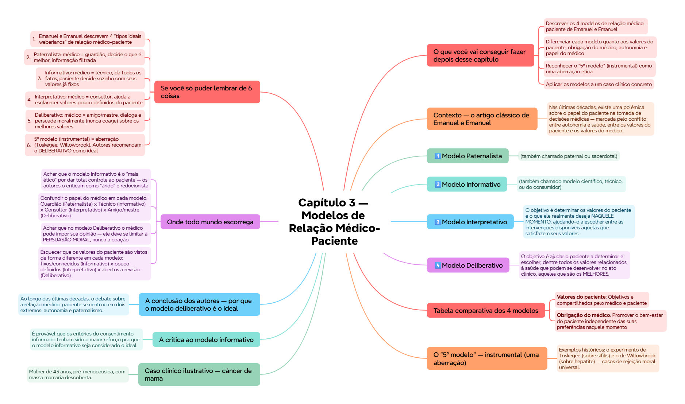

ClinicusMed · Dossiê Clinicus — Padrão de Excelência
Nv. 1
0 XP
🎯 O que você vai conseguir fazer depois desse capítulo
Descrever os 4 modelos de relação médico-paciente de Emanuel e Emanuel
Diferenciar cada modelo quanto aos valores do paciente, obrigação do médico, autonomia e papel do médico
Reconhecer o "5º modelo" (instrumental) como uma aberração ética
Aplicar os modelos a um caso clínico concreto
Entender por que os autores recomendam o modelo deliberativo como ideal
Explicar a crítica ao modelo informativo, apesar de ser dominante nos critérios bioéticos e legais atuais
📖 Contexto — o artigo clássico de Emanuel e Emanuel
Nas últimas décadas, existe uma polêmica sobre o papel do paciente na tomada de decisões médicas — marcada pelo conflito entre autonomia e saúde, entre os valores do paciente e os valores do médico.
Pra reduzir o poder do médico, muitos defenderam um modelo em que o paciente tenha maior controle. Outros questionam isso, porque esse modelo não assume o potencial desequilíbrio que caracteriza a relação médico-paciente — onde uma parte está doente e demanda segurança, e onde se fazem julgamentos que envolvem a interpretação de informação técnica.
🟢 Ezekiel J. Emanuel e Linda L. Emanuel esboçaram 4 modelos de relação médico-paciente, enfatizando as diferentes concepções de cada um sobre: os objetivos da relação, as obrigações do médico, o papel dos valores do paciente, e a maneira de conceber a autonomia do paciente.
⚙️ Os modelos são "tipos weberianos ideais"
💭 Um detalhe metodológico importante: esquematicamente, os modelos são tipos ideais (no sentido weberiano). Eles não descrevem nenhuma relação médico-paciente em particular, mas destacam, livres de detalhes complexos, diferentes visões sobre as características básicas da relação médico-paciente. Não incorporam padrões éticos ou legais — são ideais normativos "mais elevados que a lei", mas não "acima da lei".
1️⃣ Modelo Paternalista
(também chamado paternal ou sacerdotal)
A interação médico-paciente assegura que o paciente recebe as intervenções necessárias que melhor garantam sua saúde e bem-estar. Os médicos usam seus conhecimentos pra determinar a situação clínica e escolher os testes/tratamentos mais adequados. O médico dá ao paciente uma informação JÁ SELECIONADA que o conduzirá a consentir a intervenção que, segundo o médico, é a melhor.
Pressupõe a existência de um critério objetivo que serve pra determinar o que é melhor — por isso o médico pode discernir o que é melhor pro paciente SEM que sua participação seja necessária. O paciente deveria estar agradecido pela decisão tomada pelo médico, mesmo que não concordasse com ela.
O médico atua como tutor do paciente, determinando o que é melhor pra ele. Suas obrigações incluem colocar os interesses do paciente acima dos próprios, e pedir a opinião de outros médicos quando lhe faltam conhecimentos suficientes.
2️⃣ Modelo Informativo
(também chamado modelo científico, técnico, ou do consumidor)
O objetivo é proporcionar ao paciente TODA a informação relevante pra que possa escolher a intervenção que deseje. O médico informa sobre o estado da doença, a natureza dos diagnósticos possíveis, a natureza e probabilidade de benefícios e riscos, e a incerteza do conhecimento médico.
🟢 Base do modelo: uma distinção clara entre FATOS e VALORES. Os valores do paciente são conhecidos e estão bem definidos; o que o paciente não conhece são os fatos. É obrigação do médico fornecer todos os dados disponíveis, e será o paciente, a partir de seus valores, quem determina qual terapêutica deve ser aplicada.
Não há lugar pros valores do médico, nem pra sua compreensão dos valores do paciente. O médico é um fornecedor de experiência técnica.
3️⃣ Modelo Interpretativo
O objetivo é determinar os valores do paciente e o que ele realmente deseja NAQUELE MOMENTO, ajudando-o a escolher entre as intervenções disponíveis aquelas que satisfazem seus valores.
💭 Segundo este modelo, os valores do paciente NÃO são necessariamente fixos nem conhecidos por ele mesmo. Frequentemente estão pouco definidos, o paciente os compreende só parcialmente, e podem entrar em conflito quando aplicados a situações concretas. É tarefa do médico ajudar a esclarecer e articular esses valores.
O médico trabalha com o paciente tentando reconstruir seus objetivos, aspirações, responsabilidades e caráter. O médico NUNCA julga os valores do paciente — ajuda a compreendê-los e usá-los no contexto médico.
O médico atua como consultor, desenvolvendo um papel similar ao de um gabinete ministerial pra um chefe de Estado.
4️⃣ Modelo Deliberativo
O objetivo é ajudar o paciente a determinar e escolher, dentre todos os valores relacionados à saúde que podem se desenvolver no ato clínico, aqueles que são os MELHORES.
O médico esboça a informação sobre a situação clínica e ajuda a esclarecer os tipos de valores incluídos nas opções possíveis — incluindo indicar por que certos valores relacionados à saúde têm mais valor e devem ser almejados. Médico e paciente se comprometem numa deliberação conjunta sobre qual tipo de valores relacionados com a saúde pode e deve buscar o paciente.
📌 O médico não deve ir além da persuasão MORAL — em última instância, deve-se evitar a coação, e será o paciente quem define sua vida e seleciona a ordem de valores que vai assumir.
O médico atua como um mestre ou amigo, comprometendo o paciente num diálogo sobre qual tipo de atuação seria a melhor.
📊 Tabela comparativa dos 4 modelos
Paternalista
Informativo
Interpretativo
Deliberativo
Valores do paciente
Objetivos e compartilhados pelo médico e paciente
Definidos, fixos e conhecidos pelo paciente
Pouco definidos e conflitivos, necessitados de esclarecimento
Abertos a discussão e revisão através do debate moral
Obrigação do médico
Promover o bem-estar do paciente independente das suas preferências naquele momento
Dar informação relevante e realizar a intervenção escolhida pelo paciente
Determinar e interpretar os valores do paciente, informar e realizar a intervenção escolhida por ele
Estruturar e persuadir o paciente sobre os valores mais adequados, informar e realizar a intervenção escolhida por ele
Concepção da autonomia
Assumir valores objetivos
Escolha e controle sobre os cuidados médicos
Autocompreensão dos elementos relevantes
Autodesenvolvimento moral dos valores relevantes
Papel do médico
Guardião
Técnico especialista
Consultor ou conselheiro
Amigo ou mestre
💡 Mnemônico dos papéis: Guardião (Paternalista) → Técnico (Informativo) → Consultor (Interpretativo) → Amigo (Deliberativo) — "GTCA", do controle total do médico até o diálogo compartilhado.
⚠️ O "5º modelo" — instrumental (uma aberração)
🏥 Os autores mencionam que poderia se adicionar um 5º modelo: o instrumental. Nele, os valores do paciente são IRRELEVANTES — o médico persegue, junto com o paciente, objetivos NÃO relacionados a ele, como o bem da sociedade ou o avanço do conhecimento científico.
Exemplos históricos: o experimento de Tuskegee (sobre sífilis) e o de Willowbrook (sobre hepatite) — casos de rejeição moral universal.
📌 Esse modelo NÃO é um ideal alternativo válido — é uma ABERRAÇÃO ética, por isso os autores não o desenvolvem mais no artigo.
🩺 Caso clínico ilustrativo — câncer de mama
Mulher de 43 anos, pré-menopáusica, com massa mamária descoberta. Cirurgia revela carcinoma ductal de 3,5cm, sem afetação ganglionar, receptores estrogênicos positivos, sem evidência de metástase. Recentemente divorciada, voltou a trabalhar como assessora jurídica.
Resposta no modelo Paternalista: "Existem duas alternativas terapêuticas... a linfadenectomia com radioterapia obtém os melhores resultados estéticos, então essa é a opção preferível... Já pedi aos radioterapeutas que venham comentar o tratamento com você... A quimioterapia tem efeitos colaterais, mas alguns meses de sofrimento bem valem os anos potenciais livres de doença." — o médico já decidiu e comunica a decisão de forma autoritária, com a informação já filtrada.
⚖️ A crítica ao modelo informativo
É provável que os critérios do consentimento informado tenham sido o maior reforço pra que o modelo informativo seja considerado o ideal. Desde o caso Canterbury (1972), o ênfase se colocou no chamado critério subjetivo do paciente — que obriga o médico a fornecer os dados pertinentes pra que o paciente determine quais intervenções devem ser realizadas segundo seu próprio sistema de valores.
💭 Apesar de seu predomínio nos critérios bioéticos e legais, muitos autores apontam que o modelo informativo é muito "árido" — reduz o papel do médico ao de um mero técnico, e encarna uma concepção defeituosa da autonomia do paciente.
🏆 A conclusão dos autores — por que o modelo deliberativo é o ideal
Ao longo das últimas décadas, o debate sobre a relação médico-paciente se centrou em dois extremos: autonomia e paternalismo. O modelo informativo passou a dominar os critérios bioéticos e legais — mas encarna uma concepção defeituosa da autonomia do paciente e reduz o papel do médico ao de um técnico.
🟢 A conclusão central do artigo: a essência da atividade médica é gerar conhecimento, compreensão, ensinamentos e atuações nas quais um médico HUMANISTA integra a condição médica do paciente e os valores relacionados com a saúde, faz uma recomendação sobre o curso de ação apropriado, e tenta persuadir o paciente da dignidade dessa forma de atuar. O médico com atitude humanista é o ideal plasmado no modelo deliberativo — o ideal que deveria servir de exemplo às leis e políticas que regulam a interação médico-paciente.
✅ O que você deve lembrar
4 modelos: Paternalista (guardião), Informativo (técnico), Interpretativo (consultor), Deliberativo (amigo/mestre). Os autores recomendam o DELIBERATIVO como ideal.
⚠️ Erro comum
Achar que o modelo Informativo é sempre o "melhor" só por dar total controle ao paciente — os próprios Emanuel e Emanuel criticam esse modelo por reduzir o médico a mero técnico e ter uma concepção "defeituosa" de autonomia.
⚡ Questão rápida
Por que o modelo instrumental não é considerado um "5º modelo válido", mas sim uma aberração?
Porque nele os valores do paciente são completamente IRRELEVANTES — o médico persegue objetivos que não têm relação com o bem-estar do próprio paciente (como o avanço da ciência ou o bem da sociedade), sem considerar sua autonomia ou seus interesses. Isso viola frontalmente os princípios éticos fundamentais da medicina (beneficência, não-maleficência, autonomia), como ficou evidente nos experimentos de Tuskegee e Willowbrook — por isso é rejeitado moralmente, e não é apresentado como uma opção legítima ao lado dos outros 4.
🧠 Autoexplicação
Por que faz sentido que os autores considerem o modelo Deliberativo mais "humanista" que o Informativo, mesmo o Informativo dando aparentemente mais "liberdade" ao paciente?
A aparente "liberdade" do modelo informativo é, segundo os autores, uma liberdade EMPOBRECIDA — o médico se limita a despejar dados técnicos sobre o paciente e depois se retira completamente da decisão, tratando os valores do paciente como algo já fixo, conhecido e não passível de discussão. Isso ignora uma realidade humana importante: as pessoas frequentemente não têm seus valores completamente claros ou definidos diante de decisões médicas complexas e carregadas emocionalmente, especialmente em situações de doença grave. O modelo deliberativo, ao contrário, reconhece essa complexidade humana — o médico se engaja ativamente no processo, ajudando o paciente a EXPLORAR e desenvolver seus próprios valores através do diálogo, oferecendo sua perspectiva humanista sem impor decisões (evitando a coação do paternalismo) e sem abandonar o paciente sozinho com uma pilha de dados técnicos (evitando a aridez do informativo). É esse compromisso ativo e dialógico — tratando o paciente como alguém capaz de crescimento moral através da conversa, e não apenas como um "consumidor" de informação técnica — que os autores consideram mais verdadeiramente humanista e mais respeitoso da autonomia real do paciente.
⚠️ Onde todo mundo escorrega
Achar que o modelo Informativo é o "mais ético" por dar total controle ao paciente — os autores o criticam como "árido" e reducionista
Confundir o papel do médico em cada modelo: Guardião (Paternalista) x Técnico (Informativo) x Consultor (Interpretativo) x Amigo/mestre (Deliberativo)
Achar que no modelo Deliberativo o médico pode impor sua opinião — ele deve se limitar à PERSUASÃO MORAL, nunca à coação
Esquecer que os valores do paciente são vistos de forma diferente em cada modelo: fixos/conhecidos (Informativo) x pouco definidos (Interpretativo) x abertos a revisão (Deliberativo)
Achar que o modelo instrumental é uma opção válida entre os 5 — é uma ABERRAÇÃO, não um modelo legítimo
📚 Se você só puder lembrar de 6 coisas
Emanuel e Emanuel descrevem 4 "tipos ideais weberianos" de relação médico-paciente
Paternalista: médico = guardião, decide o que é melhor, informação filtrada
Informativo: médico = técnico, dá todos os fatos, paciente decide sozinho com seus valores já fixos
Interpretativo: médico = consultor, ajuda a esclarecer valores pouco definidos do paciente
Deliberativo: médico = amigo/mestre, dialoga e persuade moralmente (nunca coage) sobre os melhores valores
5º modelo (instrumental) = aberração (Tuskegee, Willowbrook). Autores recomendam o DELIBERATIVO como ideal
🩺 Caso Clínico Progressivo — Diagnóstico de Câncer e Escolha do Modelo de Relação
Vamos acompanhar Dra. Marisa, oncologista, decidindo como conduzir a comunicação com uma paciente recém-diagnosticada. O caso evolui em 3 níveis — clica em cada um pra ver como as coisas vão se desenrolando.
🧠 Mapa Mental — Modelos de Relação Médico-Paciente
Visão geral do capítulo em formato visual — ideal pra revisão rápida antes da prova. O conteúdo completo, com explicações e exemplos, está no Guia de Estudo.

🃏 Flashcards — SM-2 real + interface Anki
O sistema guarda, no seu navegador, quais cards você já sabe bem e quais precisam voltar mais cedo — cada vez que você avalia um card, ele recalcula quando ele deve voltar.
Cartão 1 / 0Dominados: 0
PERGUNTA
RESPOSTA
✅ Banco de Questões Comentadas
10 questões, do mais básico ao mais puxado. Escolhe uma alternativa, depois clica em "Ver comentário completo" — vale a pena ler até quando você acerta, porque o comentário explica cada alternativa, não só a certa.